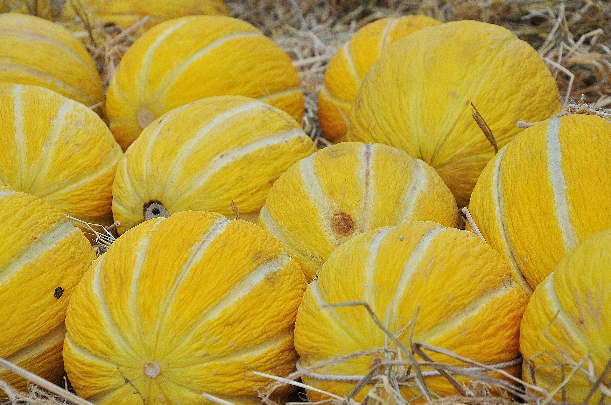
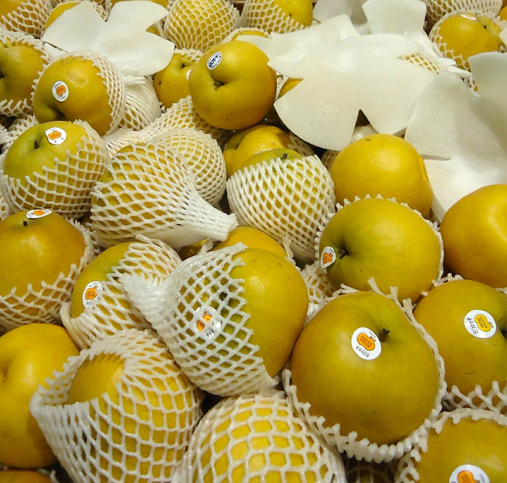

Food
Munji’s favorite flavours are sweet and creamy. She loves to eat the eel sauce off of sushi and takoyaki, and she will go nuts over a little yogurt. Next in line to yogurt would be cheese. Munji also loves many kinds of fruit. Usually she will go for pears and strawberries, but she also likes melon.
 

Drinks
Water that is left on the table, or water that you just poured for yourself. For some reason she likes other people’s water, and has a hard time drinking from her own water bowl. She likes to steal people’s drinks, even if it isn’t water. She will put her face in your cup of coffee, just because she likes the smell. One of her favorite drinks is oat milk. Specifically, she prefers to drink the leftover milk from cereal.
Toys
Munji’s favorite toy since she was a kitten is a pink unicorn llama she stole from my younger sister. We have no idea why she likes it so much, and she really doesn’t like other toys that are similar. She loves to wrestle with it and bite at its neck. She thinks she is rather ferocious even though she’s just a tiny kitten.
Munji also loves her pipe cleaners. She is practically obsessed with them. She likes to place her pipe cleaners near her food and inside her food bowl. I will also find pipe cleaners in her water bowl from time to time. Apparently, cats feel that their food and water is a “safe” location (https://katieskitty.com/cat-drop-toys-food-water-bowl/). This is because, in the wild, they will store leftovers in a safe location to eat later. Munji has continuous access to food, but this gathering and storing behavior has remained as an instinct.